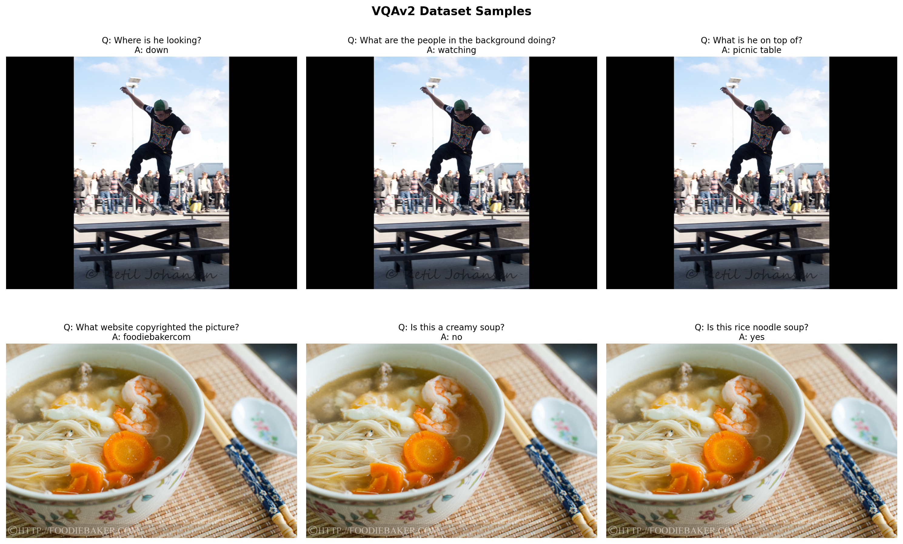
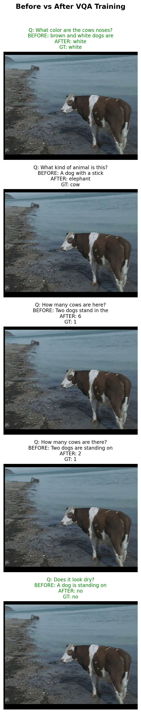

!uv pip install -q transformers datasets torch torchvision pillow accelerate einops timmIntroduction
In previous notebooks, we: 1. Built a minimal VLM from scratch and trained it for image captioning 2. Instruction fine-tuned it for object detection with JSON output
Now, let’s tackle Visual Question Answering (VQA) - teaching the model to answer natural language questions about images.
Examples
| Image | Question | Answer |
|---|---|---|
| 🖼️ Photo of a cat | “What animal is this?” | “cat” |
| 🖼️ Beach scene | “What is the weather like?” | “sunny” |
| 🖼️ Kitchen | “How many people are there?” | “2” |
Unlike object detection (structured JSON), VQA requires natural language answers - short, direct responses to questions.
Setup
import torch
import torch.nn as nn
import torch.nn.functional as F
from torch.utils.data import DataLoader, Dataset
from transformers import (
AutoModelForCausalLM,
AutoTokenizer,
ViTModel,
ViTImageProcessor,
)
from datasets import load_dataset
from PIL import Image
import numpy as np
import matplotlib.pyplot as plt
from tqdm.auto import tqdm
import textwrap
import random
import os
import warnings
warnings.filterwarnings('ignore')
%config InlineBackend.figure_format = 'retina'
device = torch.device("cuda" if torch.cuda.is_available() else "cpu")
print(f"Using device: {device}")/home/nipun.batra/.uv/nb-base/lib/python3.12/site-packages/tqdm/auto.py:21: TqdmWarning: IProgress not found. Please update jupyter and ipywidgets. See https://ipywidgets.readthedocs.io/en/stable/user_install.html
from .autonotebook import tqdm as notebook_tqdmUsing device: cudaPart 1: Load the Pretrained VLM (Caption Model)
We load from the caption-trained model (mini-vlm-flickr8k/), not the OD model. This is because: - Caption model generates fluent natural language - OD model is biased toward JSON output - VQA needs natural language answers
# Model architecture (same as previous notebooks)
class VisionProjector(nn.Module):
"""Projects vision features into the language model's embedding space."""
def __init__(self, vision_dim: int, language_dim: int):
super().__init__()
self.projection = nn.Sequential(
nn.Linear(vision_dim, language_dim),
nn.GELU(),
nn.LayerNorm(language_dim),
nn.Linear(language_dim, language_dim),
)
def forward(self, vision_features: torch.Tensor) -> torch.Tensor:
return self.projection(vision_features)
class MiniVLM(nn.Module):
"""A minimal Vision-Language Model."""
def __init__(
self,
vision_encoder: ViTModel,
language_model: AutoModelForCausalLM,
projector: VisionProjector,
tokenizer: AutoTokenizer,
):
super().__init__()
self.vision_encoder = vision_encoder
self.language_model = language_model
self.projector = projector
self.tokenizer = tokenizer
for param in self.vision_encoder.parameters():
param.requires_grad = False
def encode_image(self, pixel_values: torch.Tensor) -> torch.Tensor:
with torch.no_grad():
vision_outputs = self.vision_encoder(pixel_values=pixel_values)
image_features = vision_outputs.last_hidden_state
projected = self.projector(image_features)
return projected
def forward(
self,
pixel_values: torch.Tensor,
input_ids: torch.Tensor,
attention_mask: torch.Tensor,
labels: torch.Tensor = None,
):
batch_size = pixel_values.shape[0]
image_embeds = self.encode_image(pixel_values)
num_image_tokens = image_embeds.shape[1]
text_embeds = self.language_model.get_input_embeddings()(input_ids)
combined_embeds = torch.cat([image_embeds, text_embeds], dim=1)
image_attention = torch.ones(
(batch_size, num_image_tokens),
dtype=attention_mask.dtype,
device=attention_mask.device
)
combined_attention = torch.cat([image_attention, attention_mask], dim=1)
if labels is not None:
image_labels = torch.full(
(batch_size, num_image_tokens),
fill_value=-100,
dtype=labels.dtype,
device=labels.device
)
combined_labels = torch.cat([image_labels, labels], dim=1)
else:
combined_labels = None
outputs = self.language_model(
inputs_embeds=combined_embeds,
attention_mask=combined_attention,
labels=combined_labels,
return_dict=True,
)
return outputs
@torch.no_grad()
def generate(
self,
pixel_values: torch.Tensor,
prompt: str,
max_new_tokens: int = 20,
temperature: float = 0.7,
do_sample: bool = True,
) -> str:
"""Generate a response for an image given a prompt."""
self.eval()
image_embeds = self.encode_image(pixel_values)
prompt_ids = self.tokenizer.encode(prompt, return_tensors="pt").to(pixel_values.device)
generated_ids = prompt_ids.clone()
for _ in range(max_new_tokens):
current_embeds = self.language_model.get_input_embeddings()(generated_ids)
full_embeds = torch.cat([image_embeds, current_embeds], dim=1)
outputs = self.language_model(inputs_embeds=full_embeds)
next_token_logits = outputs.logits[:, -1, :]
if do_sample:
probs = F.softmax(next_token_logits / temperature, dim=-1)
next_token = torch.multinomial(probs, num_samples=1)
else:
next_token = next_token_logits.argmax(dim=-1, keepdim=True)
generated_ids = torch.cat([generated_ids, next_token], dim=1)
if next_token.item() == self.tokenizer.eos_token_id:
break
return self.tokenizer.decode(generated_ids[0], skip_special_tokens=True)# Model names - using larger models for better performance
vision_model_name = "google/vit-large-patch16-224"
lm_model_name = "HuggingFaceTB/SmolLM-360M"
pretrained_dir = "mini-vlm-flickr8k" # Caption model, NOT OD model
# Load base models
vision_encoder = ViTModel.from_pretrained(vision_model_name)
language_model = AutoModelForCausalLM.from_pretrained(lm_model_name)
tokenizer = AutoTokenizer.from_pretrained(lm_model_name)
image_processor = ViTImageProcessor.from_pretrained(vision_model_name)
if tokenizer.pad_token is None:
tokenizer.pad_token = tokenizer.eos_token
# Create projector
vision_dim = vision_encoder.config.hidden_size # 1024 for ViT-Large
language_dim = language_model.config.hidden_size # 960 for SmolLM-360M
projector = VisionProjector(vision_dim, language_dim)
# Load pretrained caption model weights
if os.path.exists(f"{pretrained_dir}/mini_vlm_full.pt"):
print(f"Loading pretrained CAPTION model from {pretrained_dir}/")
checkpoint = torch.load(f"{pretrained_dir}/mini_vlm_full.pt", map_location='cpu')
try:
projector.load_state_dict(checkpoint['projector_state_dict'])
language_model.load_state_dict(checkpoint['language_model_state_dict'])
print("Loaded pretrained caption model weights!")
except Exception as e:
print(f"Could not load pretrained weights (dimension mismatch): {e}")
print("Starting with fresh weights for new model sizes.")
else:
print("No pretrained weights found. Starting from scratch.")
print("(Run the captioning notebook first for better results)")
# Create VLM
vlm = MiniVLM(vision_encoder, language_model, projector, tokenizer)
vlm = vlm.to(device)
print(f"\nModel loaded on {device}")
print(f"Vision encoder: {vision_model_name} (hidden_size={vision_dim})")
print(f"Language model: {lm_model_name} (hidden_size={language_dim})")
print(f"Trainable parameters: {sum(p.numel() for p in vlm.parameters() if p.requires_grad):,}")Part 2: Load VQA Dataset
We’ll use VQAv2 - one of the most popular visual question answering benchmarks. Each sample has: - An image - A question about the image - Multiple human-provided answers (we’ll use the most common one)
# Load VQAv2 dataset (validation split - it's large enough)
# Using streaming to handle the large dataset
vqa_dataset_stream = load_dataset('lmms-lab/VQAv2', split='validation', streaming=True)
# Take a larger subset for training
num_samples = 4000 # Increased from 2000
print(f"Loading {num_samples} samples from VQAv2...")
vqa_samples = []
for i, sample in enumerate(vqa_dataset_stream):
if i >= num_samples:
break
vqa_samples.append(sample)
if (i + 1) % 1000 == 0:
print(f" Loaded {i + 1} samples...")
print(f"\nLoaded {len(vqa_samples)} VQA samples")
print(f"Sample keys: {vqa_samples[0].keys()}")Loading 4000 samples from VQAv2...
Loaded 1000 samples...
Loaded 2000 samples...
Loaded 3000 samples...
Loaded 4000 samples...
Loaded 4000 VQA samples
Sample keys: dict_keys(['question_type', 'multiple_choice_answer', 'answers', 'image_id', 'answer_type', 'question_id', 'question', 'image'])# Look at a few samples
def get_most_common_answer(answers):
"""Get the most common answer from the list of annotator answers."""
answer_counts = {}
for ans in answers:
a = ans['answer']
answer_counts[a] = answer_counts.get(a, 0) + 1
return max(answer_counts, key=answer_counts.get)
# Display a few examples
fig, axes = plt.subplots(2, 3, figsize=(15, 10))
axes = axes.flatten()
for i, ax in enumerate(axes):
sample = vqa_samples[i]
image = sample['image']
question = sample['question']
answer = get_most_common_answer(sample['answers'])
ax.imshow(image)
ax.set_title(f"Q: {question}\nA: {answer}", fontsize=10, wrap=True)
ax.axis('off')
plt.suptitle("VQAv2 Dataset Samples", fontsize=14, fontweight='bold')
plt.tight_layout()
plt.show()
Part 3: Create VQA Instruction Dataset
We format each sample as: - Input: "Question: {question} Answer:" - Target: "{answer}"
The model learns to complete the answer after seeing the image and question.
class VQADataset(Dataset):
"""Dataset for VQA instruction tuning."""
def __init__(self, samples, image_processor, tokenizer, max_length=64):
self.samples = samples
self.image_processor = image_processor
self.tokenizer = tokenizer
self.max_length = max_length
def __len__(self):
return len(self.samples)
def __getitem__(self, idx):
sample = self.samples[idx]
# Process image
image = sample['image'].convert('RGB')
pixel_values = self.image_processor(image, return_tensors="pt").pixel_values.squeeze(0)
# Get question and answer
question = sample['question']
answer = get_most_common_answer(sample['answers'])
# Format: "Question: {q} Answer: {a}<eos>"
# Adding EOS token teaches the model to STOP after the answer!
prompt = f"Question: {question} Answer:"
full_text = f"{prompt} {answer}{self.tokenizer.eos_token}"
# Tokenize
encoding = self.tokenizer(
full_text,
max_length=self.max_length,
padding='max_length',
truncation=True,
return_tensors='pt'
)
input_ids = encoding['input_ids'].squeeze(0)
attention_mask = encoding['attention_mask'].squeeze(0)
# Create labels - mask the prompt part (only train on answer + EOS)
prompt_tokens = self.tokenizer.encode(prompt, add_special_tokens=False)
prompt_len = len(prompt_tokens)
labels = input_ids.clone()
labels[:prompt_len] = -100 # Don't compute loss on prompt
labels[attention_mask == 0] = -100 # Don't compute loss on padding
return {
'pixel_values': pixel_values,
'input_ids': input_ids,
'attention_mask': attention_mask,
'labels': labels,
}
# Create train/test split (3600 train, 400 test from 4000 total)
train_samples = vqa_samples[:3600]
test_samples = vqa_samples[3600:]
train_dataset = VQADataset(train_samples, image_processor, tokenizer)
test_dataset = VQADataset(test_samples, image_processor, tokenizer)
train_loader = DataLoader(
train_dataset,
batch_size=8,
shuffle=True,
num_workers=0,
)
print(f"Training samples: {len(train_dataset)}")
print(f"Test samples: {len(test_dataset)}")
print(f"Number of batches: {len(train_loader)}")Training samples: 3600
Test samples: 400
Number of batches: 450# Verify a batch
batch = next(iter(train_loader))
print(f"Batch pixel_values shape: {batch['pixel_values'].shape}")
print(f"Batch input_ids shape: {batch['input_ids'].shape}")
# Decode first sample
print(f"\nSample text:")
print(tokenizer.decode(batch['input_ids'][0], skip_special_tokens=True))Batch pixel_values shape: torch.Size([8, 3, 224, 224])
Batch input_ids shape: torch.Size([8, 64])
Sample text:
Question: What are they walking toward? Answer: kitePart 4: Test BEFORE Training
Let’s see how the caption model responds to VQA questions before instruction tuning.
def generate_vqa_answer(model, image, question, image_processor, device):
"""Generate an answer to a visual question."""
model.eval()
if not isinstance(image, Image.Image):
image = Image.fromarray(image)
image = image.convert('RGB')
pixel_values = image_processor(image, return_tensors="pt").pixel_values.to(device)
prompt = f"Question: {question} Answer:"
# Use greedy decoding for short, factual answers (no sampling!)
response = model.generate(
pixel_values,
prompt=prompt,
max_new_tokens=10, # VQA answers are short
temperature=1.0,
do_sample=False, # Greedy decoding - more stable for VQA
)
# Extract just the answer part
if "Answer:" in response:
answer = response.split("Answer:")[-1].strip()
else:
answer = response
# Clean up: take only the first few words (VQA answers are short)
answer = answer.split('.')[0].strip() # Stop at first period
words = answer.split()
if len(words) > 5:
answer = ' '.join(words[:5]) # Limit to 5 words max
return answer, response# Test on a few samples BEFORE training
test_indices = [0, 3, 6, 9, 12]
test_data_for_comparison = []
print("=" * 70)
print("BEFORE VQA INSTRUCTION TUNING")
print("(Model was trained on captions, not Q&A)")
print("=" * 70)
before_answers = []
for idx in test_indices:
sample = test_samples[idx]
image = sample['image']
question = sample['question']
gt_answer = get_most_common_answer(sample['answers'])
pred_answer, full_response = generate_vqa_answer(vlm, image, question, image_processor, device)
before_answers.append(pred_answer)
test_data_for_comparison.append({
'image': image,
'question': question,
'gt_answer': gt_answer,
})
print(f"\nQ: {question}")
print(f" Model: {pred_answer[:50]}..." if len(pred_answer) > 50 else f" Model: {pred_answer}")
print(f" GT: {gt_answer}")======================================================================
BEFORE VQA INSTRUCTION TUNING
(Model was trained on captions, not Q&A)
======================================================================
Q: What color are the cows noses?
Model: brown and white dogs are
GT: white
Q: What kind of animal is this?
Model: A dog with a stick
GT: cow
Q: How many cows are here?
Model: Two dogs stand in the
GT: 1
Q: How many cows are there?
Model: Two dogs are standing on
GT: 1
Q: Does it look dry?
Model: A dog is standing on
GT: noPart 5: VQA Instruction Fine-Tuning
Train the model to give short, direct answers to questions.
def train_vlm_vqa(model, train_loader, num_epochs=8, lr=2e-4, checkpoint_path="vqa_checkpoint.pt"):
"""Train the VLM for VQA with checkpoint support for resumable training."""
trainable_params = [p for p in model.parameters() if p.requires_grad]
optimizer = torch.optim.AdamW(trainable_params, lr=lr)
# Try to load checkpoint for resumable training
start_epoch = 0
losses = []
if os.path.exists(checkpoint_path):
print(f"Found checkpoint: {checkpoint_path}")
try:
checkpoint = torch.load(checkpoint_path, map_location='cpu')
start_epoch = checkpoint.get('epoch', 0)
losses = checkpoint.get('losses', [])
model.projector.load_state_dict(checkpoint['projector_state_dict'])
model.language_model.load_state_dict(checkpoint['language_model_state_dict'])
optimizer.load_state_dict(checkpoint['optimizer_state_dict'])
# Move optimizer state to device
for state in optimizer.state.values():
for k, v in state.items():
if isinstance(v, torch.Tensor):
state[k] = v.to(device)
print(f"Resumed from epoch {start_epoch}")
except Exception as e:
print(f"Could not load checkpoint: {e}")
model.train()
model.vision_encoder.eval()
try:
for epoch in range(start_epoch, num_epochs):
epoch_loss = 0
progress_bar = tqdm(train_loader, desc=f"Epoch {epoch+1}/{num_epochs}")
for batch in progress_bar:
pixel_values = batch['pixel_values'].to(device)
input_ids = batch['input_ids'].to(device)
attention_mask = batch['attention_mask'].to(device)
labels = batch['labels'].to(device)
outputs = model(
pixel_values=pixel_values,
input_ids=input_ids,
attention_mask=attention_mask,
labels=labels,
)
loss = outputs.loss
optimizer.zero_grad()
loss.backward()
torch.nn.utils.clip_grad_norm_(trainable_params, max_norm=1.0)
optimizer.step()
epoch_loss += loss.item()
progress_bar.set_postfix({'loss': f"{loss.item():.4f}"})
avg_loss = epoch_loss / len(train_loader)
losses.append(avg_loss)
print(f"Epoch {epoch+1} - Average Loss: {avg_loss:.4f}")
# Save checkpoint after each epoch
torch.save({
'epoch': epoch + 1,
'losses': losses,
'projector_state_dict': model.projector.state_dict(),
'language_model_state_dict': model.language_model.state_dict(),
'optimizer_state_dict': optimizer.state_dict(),
}, checkpoint_path)
print(f"Checkpoint saved to {checkpoint_path}")
except KeyboardInterrupt:
print("\n" + "="*70)
print("Training interrupted!")
print(f"Completed {len(losses)} epochs")
# Save checkpoint on interrupt
torch.save({
'epoch': len(losses),
'losses': losses,
'projector_state_dict': model.projector.state_dict(),
'language_model_state_dict': model.language_model.state_dict(),
'optimizer_state_dict': optimizer.state_dict(),
}, checkpoint_path)
print(f"Checkpoint saved to {checkpoint_path}")
print("Run training again to resume from this checkpoint.")
print("="*70)
return losses# Train for VQA - more epochs for better convergence
# Training is preemptible - interrupt with Ctrl+C and re-run to resume
losses = train_vlm_vqa(vlm, train_loader, num_epochs=12, lr=2e-4, checkpoint_path="vqa_checkpoint.pt")# Plot training loss
plt.figure(figsize=(8, 4))
plt.plot(range(1, len(losses)+1), losses, marker='o')
plt.xlabel('Epoch')
plt.ylabel('Loss')
plt.title('VQA Instruction Fine-Tuning Loss')
plt.grid(True, alpha=0.3)
plt.show()--------------------------------------------------------------------------- NameError Traceback (most recent call last) Cell In[12], line 3 1 # Plot training loss 2 plt.figure(figsize=(8, 4)) ----> 3 plt.plot(range(1, len(losses)+1), losses, marker='o') 4 plt.xlabel('Epoch') 5 plt.ylabel('Loss') NameError: name 'losses' is not defined
<Figure size 800x400 with 0 Axes>Part 6: Test AFTER Training - Before vs After Comparison
# Test on the same samples AFTER training
print("=" * 70)
print("COMPARISON: BEFORE vs AFTER VQA INSTRUCTION TUNING")
print("=" * 70)
after_answers = []
for i, data in enumerate(test_data_for_comparison):
pred_answer, _ = generate_vqa_answer(vlm, data['image'], data['question'], image_processor, device)
after_answers.append(pred_answer)
print(f"\n{'='*70}")
print(f"Q: {data['question']}")
print(f"{'='*70}")
print(f"BEFORE: {before_answers[i][:60]}..." if len(before_answers[i]) > 60 else f"BEFORE: {before_answers[i]}")
print(f"AFTER: {pred_answer}")
print(f"GT: {data['gt_answer']}")======================================================================
COMPARISON: BEFORE vs AFTER VQA INSTRUCTION TUNING
======================================================================
======================================================================
Q: What color are the cows noses?
======================================================================
BEFORE: brown and white dogs are
AFTER: white
GT: white
======================================================================
Q: What kind of animal is this?
======================================================================
BEFORE: A dog with a stick
AFTER: elephant
GT: cow
======================================================================
Q: How many cows are here?
======================================================================
BEFORE: Two dogs stand in the
AFTER: 6
GT: 1
======================================================================
Q: How many cows are there?
======================================================================
BEFORE: Two dogs are standing on
AFTER: 2
GT: 1
======================================================================
Q: Does it look dry?
======================================================================
BEFORE: A dog is standing on
AFTER: no
GT: no# Visual comparison
def wrap_text(text, width=30):
return '\n'.join(textwrap.wrap(str(text), width=width))
fig, axes = plt.subplots(len(test_data_for_comparison), 1, figsize=(12, 4*len(test_data_for_comparison)))
for i, (data, before, after) in enumerate(zip(test_data_for_comparison, before_answers, after_answers)):
ax = axes[i]
ax.imshow(data['image'])
title = f"Q: {data['question']}\n"
title += f"BEFORE: {before[:40]}...\n" if len(before) > 40 else f"BEFORE: {before}\n"
title += f"AFTER: {after}\n"
title += f"GT: {data['gt_answer']}"
# Color code: green if after matches GT, red otherwise
color = 'green' if after.lower().strip() == data['gt_answer'].lower().strip() else 'black'
ax.set_title(title, fontsize=10, color=color)
ax.axis('off')
plt.suptitle("Before vs After VQA Training", fontsize=14, fontweight='bold', y=1.01)
plt.tight_layout()
plt.show()
Part 7: Evaluate on More Test Samples
# Evaluate on more test samples
num_eval = min(50, len(test_samples))
exact_correct = 0
soft_correct = 0
results = []
print(f"Evaluating on {num_eval} test samples...")
def soft_match(pred, gt):
"""Check if ground truth appears in prediction (handles 'green' in 'green and white')."""
pred_lower = pred.lower().strip()
gt_lower = gt.lower().strip()
# Exact match
if pred_lower == gt_lower:
return True, True
# GT appears at start of prediction
if pred_lower.startswith(gt_lower):
return False, True
# GT is contained in prediction
if gt_lower in pred_lower:
return False, True
return False, False
for i in tqdm(range(num_eval)):
sample = test_samples[i]
pred_answer, _ = generate_vqa_answer(vlm, sample['image'], sample['question'], image_processor, device)
gt_answer = get_most_common_answer(sample['answers'])
is_exact, is_soft = soft_match(pred_answer, gt_answer)
if is_exact:
exact_correct += 1
if is_soft:
soft_correct += 1
results.append({
'question': sample['question'],
'predicted': pred_answer,
'ground_truth': gt_answer,
'exact': is_exact,
'soft': is_soft
})
exact_acc = exact_correct / num_eval * 100
soft_acc = soft_correct / num_eval * 100
print(f"\nExact Match Accuracy: {exact_acc:.1f}% ({exact_correct}/{num_eval})")
print(f"Soft Match Accuracy: {soft_acc:.1f}% ({soft_correct}/{num_eval})")Evaluating on 50 test samples...100%|██████████| 50/50 [00:05<00:00, 9.85it/s]
Exact Match Accuracy: 34.0% (17/50)
Soft Match Accuracy: 36.0% (18/50)# Show some correct and incorrect examples
print("\n" + "="*70)
print("EXACT MATCH CORRECT")
print("="*70)
for r in [x for x in results if x['exact']][:5]:
print(f"Q: {r['question']}")
print(f"A: {r['predicted']} (GT: {r['ground_truth']})")
print()
print("\n" + "="*70)
print("SOFT MATCH CORRECT (answer contained)")
print("="*70)
for r in [x for x in results if x['soft'] and not x['exact']][:5]:
print(f"Q: {r['question']}")
print(f"Pred: {r['predicted']} | GT: {r['ground_truth']}")
print()
print("\n" + "="*70)
print("INCORRECT PREDICTIONS")
print("="*70)
for r in [x for x in results if not x['soft']][:5]:
print(f"Q: {r['question']}")
print(f"Pred: {r['predicted']} | GT: {r['ground_truth']}")
print()
======================================================================
EXACT MATCH CORRECT
======================================================================
Q: What color are the cows noses?
A: white (GT: white)
Q: What is the cow doing?
A: walking (GT: walking)
Q: Is there anything for the cow to eat?
A: no (GT: no)
Q: Is this a wild cow?
A: yes (GT: yes)
Q: Can you see a reflection of a cow in the ponds surface?
A: no (GT: no)
======================================================================
SOFT MATCH CORRECT (answer contained)
======================================================================
Q: What is this orange sitting on?
Pred: picnic table | GT: table
======================================================================
INCORRECT PREDICTIONS
======================================================================
Q: What color is the cow?
Pred: black | GT: brown and white
Q: What kind of animal is this?
Pred: elephant | GT: cow
Q: What is this animal?
Pred: zebra | GT: cow
Q: Who took the photograph?
Pred: dog | GT: photographer
Q: How many cows are here?
Pred: 6 | GT: 1
Part 8: Save the VQA Model
# Save the VQA-tuned model
save_dir = "mini-vlm-vqa"
os.makedirs(save_dir, exist_ok=True)
torch.save({
'projector_state_dict': vlm.projector.state_dict(),
'language_model_state_dict': vlm.language_model.state_dict(),
'config': {
'vision_model_name': vision_model_name,
'lm_model_name': lm_model_name,
'vision_dim': vision_dim,
'language_dim': language_dim,
},
}, f"{save_dir}/mini_vlm_vqa.pt")
tokenizer.save_pretrained(f"{save_dir}/tokenizer")
image_processor.save_pretrained(f"{save_dir}/image_processor")
print(f"Model saved to {save_dir}/")
print(f"Contents: {os.listdir(save_dir)}")Model saved to mini-vlm-vqa/
Contents: ['tokenizer', 'mini_vlm_vqa.pt', 'image_processor']Summary
We successfully instruction fine-tuned our VLM for Visual Question Answering:
What We Did
- Loaded the caption-trained VLM (not the OD model - different task)
- Used VQAv2 dataset with 1800 training samples
- Created Q&A format:
"Question: {q} Answer: {a}" - Fine-tuned for 8 epochs to learn short, direct answers
- Evaluated with exact match accuracy
Key Insights
- Task-specific tuning matters: Caption model → VQA model (not OD → VQA)
- Short answers: VQA typically requires 1-3 word answers
- Prompt format:
"Question: ... Answer:"helps structure the task - Label masking: Only train on the answer portion
Model Family Tree
Base Models (ViT + SmolLM)
│
└── Caption Training (Flickr8k)
│
├── OD Instruction Tuning → mini-vlm-od/
│
└── VQA Instruction Tuning → mini-vlm-vqa/ ← This notebookLimitations
- Small model (135M LLM) limits reasoning ability
- Exact match accuracy is strict (“2” vs “two” counted as wrong)
- Limited training data (1800 samples)
- No complex reasoning or counting abilities
Next Steps
- Multi-task model: Combine caption, OD, and VQA in one model
- Better evaluation: Use VQA accuracy metric (considers answer variations)
- Larger models: Try SmolLM-360M or 1.7B for better reasoning
- Chain-of-thought: Add reasoning before final answer
References
Cleanup: Release GPU Memory
When done with the notebook, run this cell to free up GPU memory for other tasks.
def cleanup_gpu_memory():
"""Clean up GPU memory by deleting models and clearing cache."""
import gc
global vlm, vision_encoder, language_model, projector
global train_loader, train_dataset, test_dataset, vqa_samples
# Delete model components
for var_name in ['vlm', 'vision_encoder', 'language_model', 'projector']:
if var_name in globals():
try:
del globals()[var_name]
print(f"Deleted {var_name}")
except:
pass
# Delete data
for var_name in ['train_loader', 'train_dataset', 'test_dataset', 'vqa_samples']:
if var_name in globals():
try:
del globals()[var_name]
print(f"Deleted {var_name}")
except:
pass
# Force garbage collection
gc.collect()
# Clear CUDA cache
if torch.cuda.is_available():
torch.cuda.empty_cache()
torch.cuda.synchronize()
allocated = torch.cuda.memory_allocated() / 1024**3
reserved = torch.cuda.memory_reserved() / 1024**3
print(f"\nGPU Memory after cleanup:")
print(f" Allocated: {allocated:.2f} GB")
print(f" Reserved: {reserved:.2f} GB")
print("\nGPU memory cleanup complete!")
# Run cleanup
cleanup_gpu_memory()